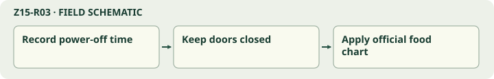

Z15-R03 · Outage reconstruction
Track cold food during a power outage
Use elapsed time and actual temperature to decide whether food can be kept.
Lineage · Preparedness primer reconstruction · Thirty-Day Outage Operations
When it applies · A household refrigerator or freezer initially working when the power fails.
Equipment · Appliance thermometer, written outage log and access to the official per-item chart.

Actions
- Note when power went out and keep doors closed. A closed refrigerator typically preserves safe conditions for about four hours.[F04]
- Check temperatures and elapsed time using the official chart. A closed full freezer generally holds temperature about 48 hours and a half-full one about 24 hours.[F04, F05]
- Evaluate each food by its category and storage history. For applicable frozen foods, ice crystals or a confirmed temperature of 40°F or below inform refreezing.[F05]
Verify · Record the measured temperature and keep, refreeze or discard decision for each relevant food group.[F04, F05, ED]
Stop or change course · Never taste food to decide whether it is safe after a loss of cold storage.[F04]
Evidence and editorial notes
- F04 · USDA / FDA / CDC · Food Safety During Power Outage
- Refrigerated food and power outages · Refrigerator starts cold; keep door closed
An unopened refrigerator keeps food cold for about four hours. Follow the per-item discard chart after loss of temperature control. Never taste to test.
Primary source · checked 2026-11-24 - F05 · USDA / FDA / CDC · Food Safety During Power Outage
- Frozen food and power outages · Freezer door closed; typical household unit
A full freezer holds temperature about 48 hours, a half-full freezer about 24. Use ice crystals or measured 40°F or below to evaluate refreezing where the chart permits.
Primary source · checked 2026-11-24
Source lineage · Preparedness primer reconstruction · Thirty-Day Outage Operations.